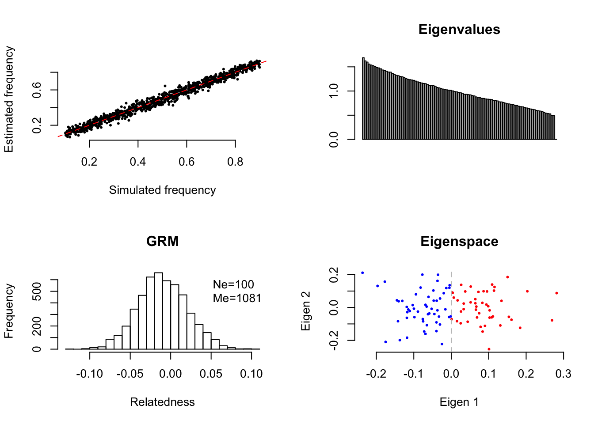

EigenGWAS theory and application
2018-11-27
Chapter 1 EigenGWAS basis
This project is dedicated to EigenGWAS, a linear model analysis approach for eigenvectors on genomic data, which can be represented as \(\mathbf{X}\) the \(n \times m\) genotype matrix. Without loss of generality, \(x_j\) for the \(i^{th}\) locus is a biallic locus. The data matrix \(\mathbf{X}\) can be generated from genotyping chips, NGS, or GBS.
set.seed(2018)
freq=runif(1000, 0.1, 0.9)
X=matrix(0, 100, length(freq))
for(i in 1:length(freq)) {
X[,i]=rbinom(nrow(X), 2, freq[i])
}
print(dim(X))
## [1] 100 1000
plot(freq, colMeans(X)/2, xlab="Simulated frequency", ylab="Estimated frequency", bty='n', pch=16, cex=0.5)
abline(a=0, b=1, col="red", lty=2)
1.1 Genetic relatedness matrix \(\mathbf{G}\)
We can construct the \(n\times\) genetic relatedness matrix as \(\mathbf{X}\) the \(n\times m\) genotype matrix. We can construct the \(n\times\) genetic relatedness matrix as
\[\mathbf{G}=\tilde{\mathbf{X}}\tilde{\mathbf{X}}^T\] in which \(\tilde{\mathbf{X}}\) is the scaled form of \(\mathbf{X}\) However, upon the mating type of the species, \(\mathbf{G}\) should be constructly differently. For a random mating population, \(x_l\) is scaled as \(\tilde{x}_l=\frac{x_l-2p_l}{\sqrt{2p_lq_l}}\), whereas for inbred population, \(\tilde{x}_l=\frac{x_l-2p_l}{\sqrt{4p_lq_l}}\). \(q_l\) equals \(1-p_l\).
So for a pair of individuals \(i\) and \(j\), \[G_{ij}=\frac{1}{\tilde{m}}\sum_l^{\tilde{m}}\frac{(x_{il}-2p_l)(x_{jl}-2p_l)}{2(1+F)p_iq_i}\] in which \(\tilde{m}\) is the number of genotyped loci at both individal \(i\) and \(j\), and \(F\) the inbreeding coefficient takes value of 0 for random mating population and 1 for inbred population.
1.1.1 Statistical properties of \(\mathbf{G}\)
Given \(\mathbf{G}\), we can define two population parameters, \(n_e\), the effective population size, and \(m_e\), the effective number of markers.
Let \(\mathbf{G}_o\) denote the off diagonal elements of \(\mathbf{G}\), then we have \[n_e=\frac{-1}{mean(\mathbf{G}_o)}\] \(n_e\) reflects true relatedness between any pair of samples;
\[m_e=\frac{1}{Var(\mathbf{G}_o)}\] The ratio between \(\frac{m_e}{m}\) reflects general linkage disequilibrium between the markers. Alternatively, \(m_e\) can be written as \[m_e=\frac{\sum_{i=1}^m\sum_{j=1}^m\rho_{ij}}{m^2}\]
Xs=apply(X, 2, scale)
G=Xs %*% t(Xs)/ncol(X)
Ne=-1/mean(G[col(G)<row(G)])
Me=1/var(G[col(G)<row(G)])
print(paste("Ne=", Ne, "Me=", Me, "given N=", nrow(Xs), "and M=", ncol(Xs)))
## [1] "Ne= 100 Me= 1080.91076380488 given N= 100 and M= 1000"
hist(G[col(G)<row(G)], main="GRM", xlab="Relatedness", breaks = 25)
legend("topright", legend = c(paste0("Ne=", format(Ne, digits = 2)), paste0("Me=", format(Me, digits = 2)) ), bty = 'n')
1.2 EigenGWAS analysis
Given eigenanalysis of \(\mathbf{X}\), we have \(\mathbf{E\Lambda E}\), in which \(\mathbf{\Lambda}\) is the diagonal matrix for eigenvalues and \(\mathbf{E}_k\) is the eigenvector associated with the \(k^{th}\) largest eigenvalue, and regress \(\mathbf{E}_k\), the \(k^{th}\) column, on each marker, we have the model below
\[\mathbf{E}_k=a+\beta_j\mathbf{x}_i+e\]
It consequently generates \(m\) estimates of \(\beta\), \(\sigma_j\), and their corresponding \(p\) values. Given the \(m\) \(p\) values, the conventional Manhattan plot can be made.
In particular, the one-degree-of-freedom \(\chi^2_1\) has approximation as \(4\frac{\color{red} {n_1}\color{blue}{n_2}}{n}\frac{(\color{red}{p_{1,l}}-\color{blue}{p_{2,l}})^2}{\bar{p_l}\bar{q_l}}\). \(\color{red}{n_1}\) and \(\color{blue}{n_2}\) are the numbers of samples at the left and right side of “0” on the eigenvector, see the figure below. \(\color{red}{p_{1,l}}\) and \(\color{blue}{p_{2,l}}\) are frequencies of the reference allele in two subgroups, respectively. \(\bar{p_l}\) is the allele frequency of the reference allele.
eigenG=eigen(G)
layout(matrix(1:2, 1, 2))
barplot(eigenG$values, main="Eigenvalues")
plot(eigenG$vectors[,1], eigenG$vectors[,2], xlab="Eigen 1", ylab="Eigen 2", bty='n', main="Eigenspace", pch=16, cex=0.5, col=ifelse(eigenG$vectors[,1]>0, "red", "blue"))
abline(v=0, col="grey", lty=2)
1.2.1 Population structure \(\lambda_{GC}\)
We can define \(\lambda_{GC}=\chi^2_{1,median(p)}/\chi^2_{1,0.5}\), in which \(\chi^2_{1,0.5}=0.455\). We further use subscript \(k\) to denote \(\lambda_{GC_k}\) the one that is estimated from \(\mathbf{E}_k\).
When the population structure is completely driven by genetic drift, \(\lambda_{GC_k} \approx \Lambda_k\).
After technical correction, correspondingly \(\tilde\chi^2_1=\chi^2_1/\lambda_{GC}\), a reduce of the test statistic compared to its original form.
Chi=rchisq(10000, 1, ncp=0.2)
layout(matrix(1:2, 1, 2))
qqplot(main="Raw", rchisq(1000,1), Chi, bty="n", xlab=expression(paste("Theoretical ",chi[1]^2)), ylab=expression(paste("Observed ",chi[1]^2)), pch=16, cex=0.5)
abline(a=0, b=1, col="red", lty=2)
gc=median(Chi)/qchisq(0.5, 1, lower.tail = F)
ChiGC=Chi/gc
qqplot(main="After correction", rchisq(1000,1), ChiGC, bty="n", xlab=expression(paste("Theoretical ",chi[1]^2)), ylab=expression(paste("Observed ",chi[1]^2)), pch=16, cex=0.5)
abline(a=0, b=1, col="red", lty=2)1.2.2 Threshold for EigenGWAS
As shown above, EigenGWAS Bonferroni correction, such as \(\alpha/m\), can be used to set the threshold at the significance level \(\alpha\), such as \(\alpha=0.05\).
1.3 Connection to SVD
SVD of \(\mathbf{X}=\mathbf{U\Lambda V}\), the EigenGWAS model can be written as \(\mathbf{V}_k=\frac{\mathbf{XU}_k}{\Lambda_k}\). However, in this transformation, eigenvalue is involved, as would be show. It will reduce the statistical power for EigenGWAS.
1.4 Intepretation
The EigenGWAS model resembles the Newtown’s first and the second law for classical mechanics. The first law states that
In an inertial frame of reference, an object either remains at rest or continues to move at a constant velocity, unless acted upon by a force.
Analogously, in population genetics, it can be seemed as genetic drift that is constantly driving the a pair of population apart from each other, and its velocity can be quantified by a binomial distribution as \(\frac{pq}{\tilde{n}_e}\).
In an inertial frame of reference, the vector sum of the forces \(F\) on an object is equal to the mass m of that object multiplied by the acceleration a of the object: \(F = ma\).
Analogously, the selection can drive a genomic region run against its reference population at a velocity greater than \(\frac{pq}{\tilde{n}_e}\).